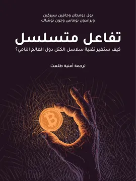

تفاعل متسلسل: كيف ستغير تقنية سلاسل الكتل دول العالم النامي؟

قراءة عربية أصلية محددة النطاق في الصفحات 9 إلى 14 من ملف PDF المرتبط، وليست تلخيصا كاملا للكتاب. نناقش ما تدعمه هذه المقاطع فقط.
سلاسل الكتل: تقنية تبني الثقة في العالم النامي
ينطلق الكتاب من إدراك يزداد شيوعًا في جميع أنحاء العالم، وعلى الأخص في الدول النامية، بأن ثمة مجموعة من المشكلات المرتبطة بالثقة والتحقق ونقل القيمة يمكن أن تحلها فعليًا تقنية سلسلة الكتل «البلوك تشين»، لتفتح آفاقًا لا حدود لها للنهوض. وبأسلوب واضح المبادئ خطوة بخطوة يشرح المؤلفون الأساسيات التي تعمل وفقًا لها سلسلة كتل البتكوين، وكيف تتشابه سلاسل الكتل الأخرى معها وتختلف عنها، وكيف يتبناها رواد الأعمال في البلدان النامية لحل نطاق هائل من المشكلات، من تحويل الأموال إلى الأدوية المغشوشة وإخضاع قادة الحروب للمساءلة. وتسهم دراسات حالة من أوغندا والفلبين ومنغوليا ونماذج من البلدان المتقدمة في التأكيد على التأثير الهائل لهذه المفاهيم على العالم النامي، مع تناول التحديات المهمة: نيل القبول في صناعات راسخة، وسلامة البيانات، ومقاومة الحكومات التي تخشى فقدان زمام التحكم، فهي ليست ترياقًا شافيًا لكل مشكلة. ويستعرض تطور المحافظ الإلكترونية مثل «إم-بيسا» في كينيا و«وي تشات» في الصين، وكيف صارت أسواق أفريقيا من الأكثر ابتكارًا في العالم.
زاوية وحدود القراءة
قراءة موجزة من ص ٩ إلى ص ١٤ من أصل ١٤٤ صفحة، تعرض تمهيد الكتاب، لا الكتاب كاملًا.
الطبعة والقراءة
هذه الترجمة العربية صادرة ومتاحة مجانًا بموجب اتفاق قانوني بين مؤسسة هنداوي ودار نشر سبرينجر نيتشر كاستمر سيرفيس سنتر جي إم بي إتش. حقوق الترجمة محفوظة لمؤسسة هنداوي.
تنزيل PDF المجاني ↓ القراءة والمصدر الرسمي ↗